Cystoscope
A cystoscopy is a procedure to look inside the bladder using a thin camera called a cystoscope.
This project goal was to create a patient friendly and low cost cystoscope manufacturable through injection molding allowing procedures to minimize anestesia risk by keeping the patient awake.
Date: Fall 2020
Institution: Duke University
Coruse: Advanced Manufacturing and Prototyping
Skills: Design for Injection Molding, FEA Analysis, Photoshop, 3D Modeling (Fusion360), Animation, Rendering, LBM Estimation
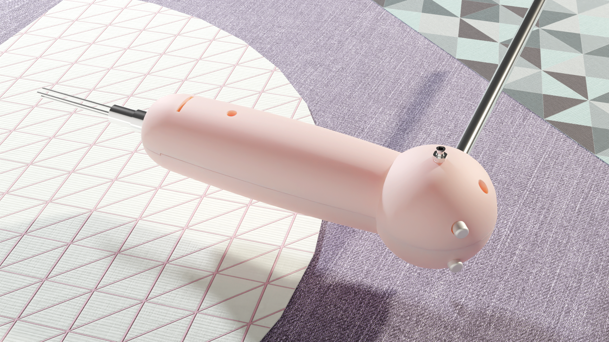
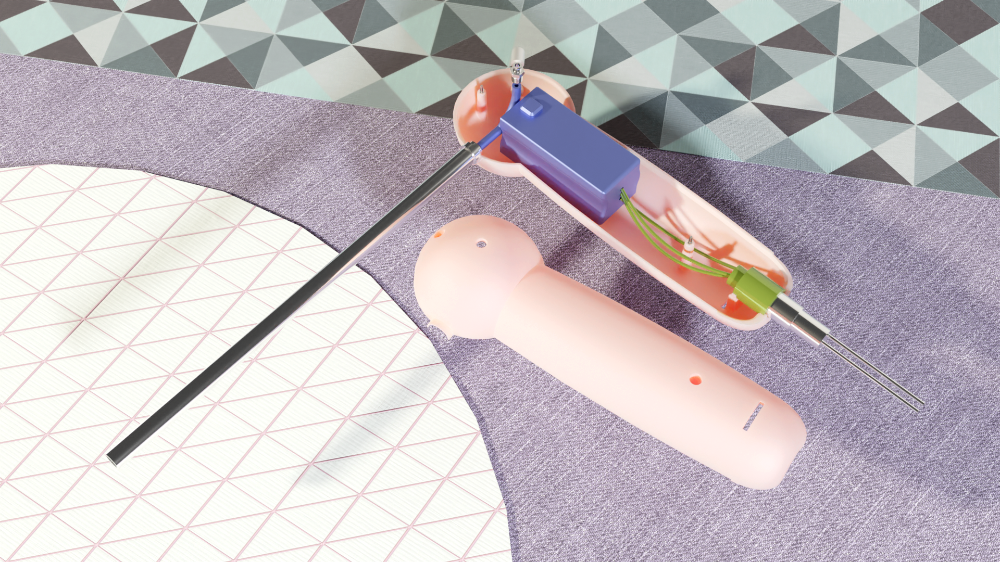

Interactive 3D Model
Left Click to Rotate | Scroll to Zoom | Right Click to Pan
Current Available Rigid Cystoscopes:
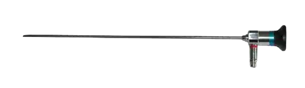
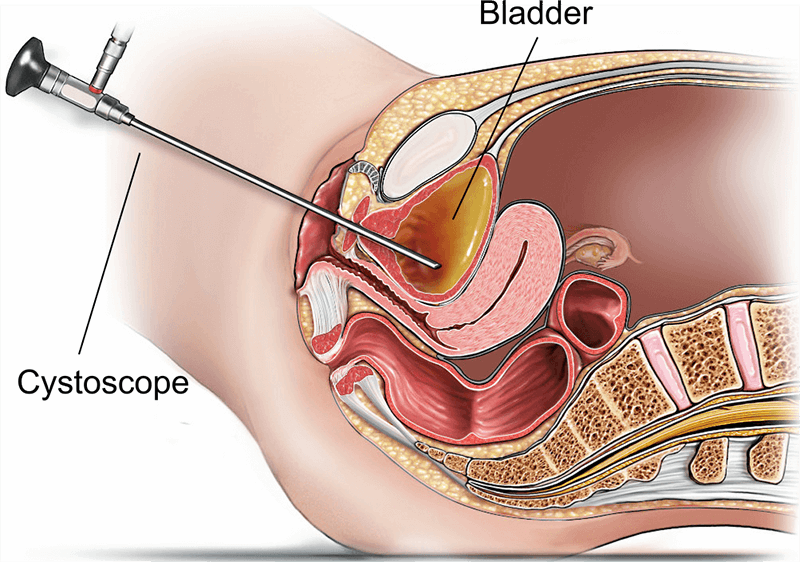
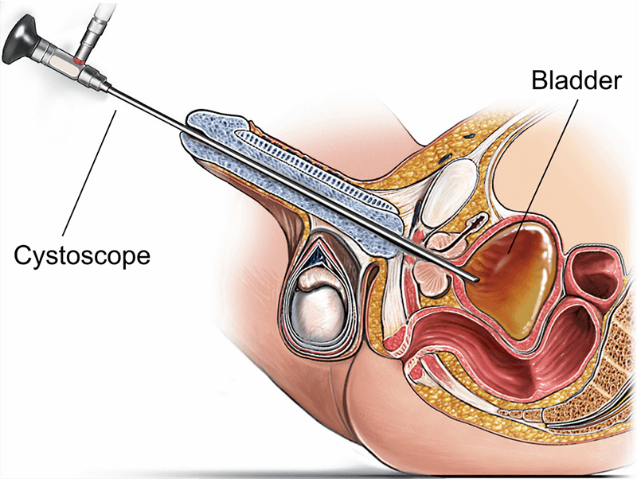
PART 1: Widget — Photon Engine
A 3D printed widget and a caliper were mailed to us to first, make an sketch to scale. The drawings were made in 3rd angle projection (ASME).
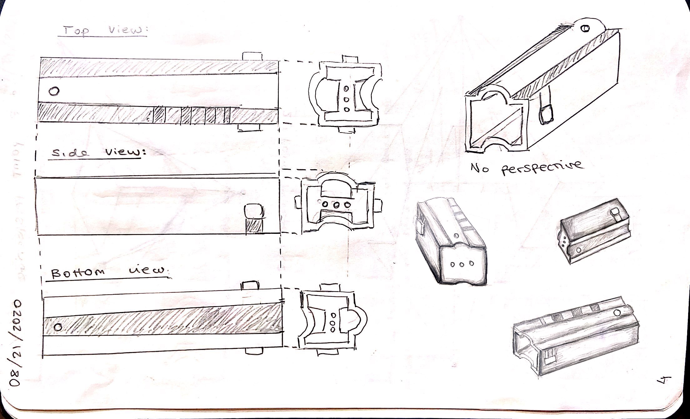
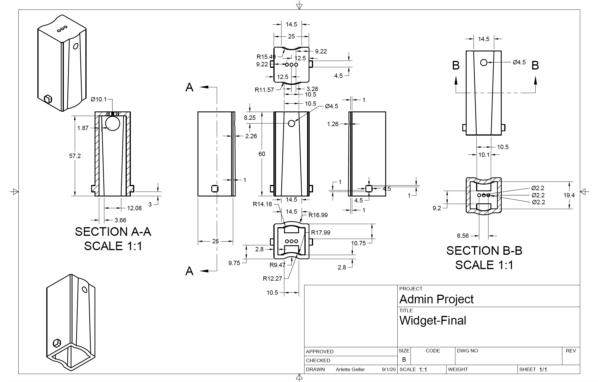
Later to be modeled in Autodesk Fusion 360, and redesigned to fit and be secured inside a cystoscope that we would also need to design.
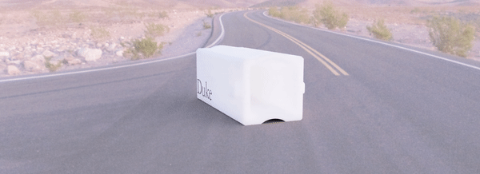
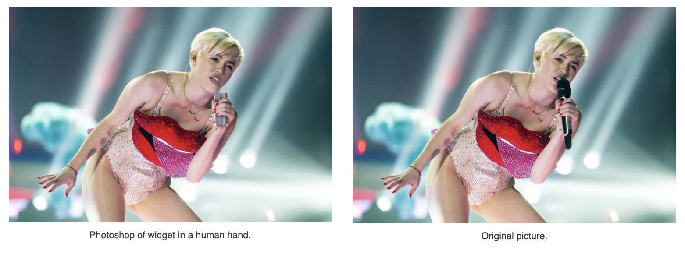
Redesign of widget for injection molding:
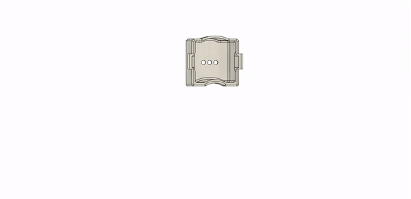
PART 2: Cystoscope Design
Requirements:
- Must accommodate securely, mount and protect the widget
- Must provide an in/out water connection
- Must provide provision to control water in/out flow
- Must accommodate 24F sheath 20 cm in length
- Must suit left or right handed use
- Must accommodate a 3 pole electrical connectior
- Must be manufacturable through injection molding
Moodboard:
“Non-scary cystoscope that would be used when the patient is awake”
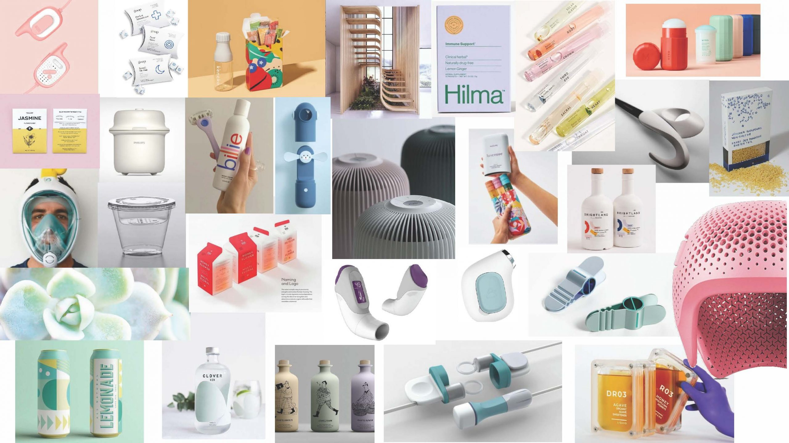
Inspiration Drawings:
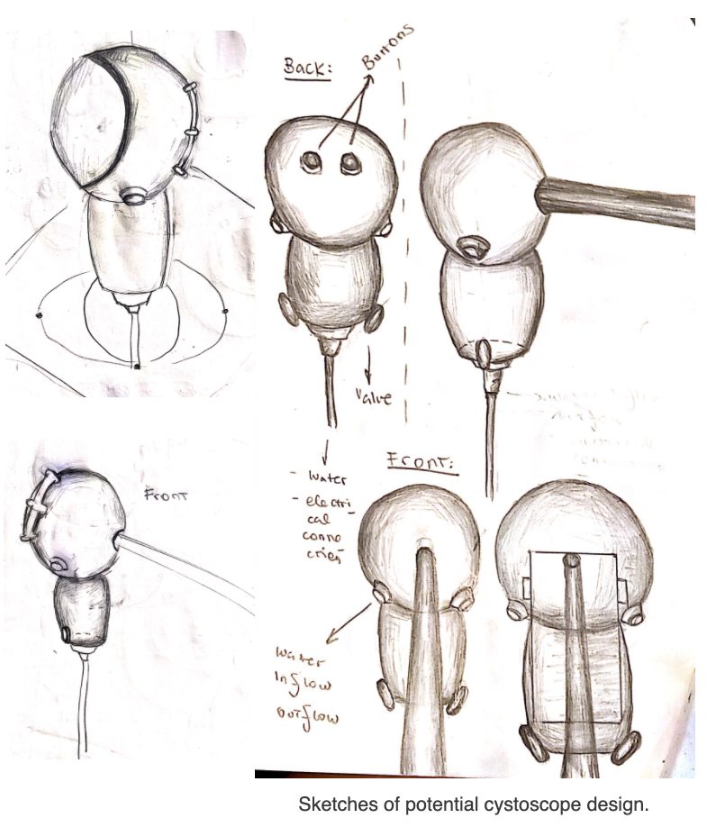
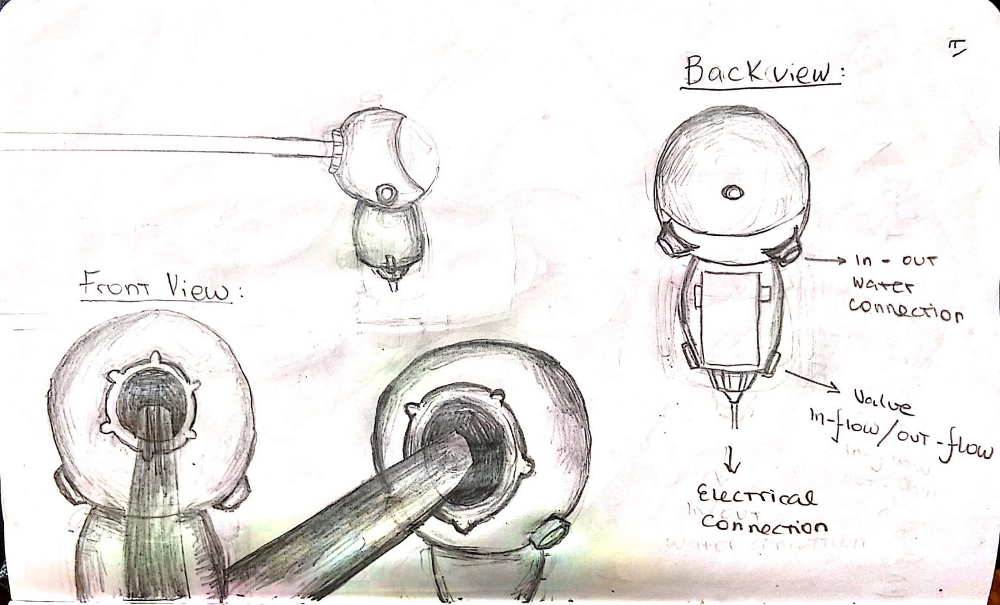
Technical Drawings:
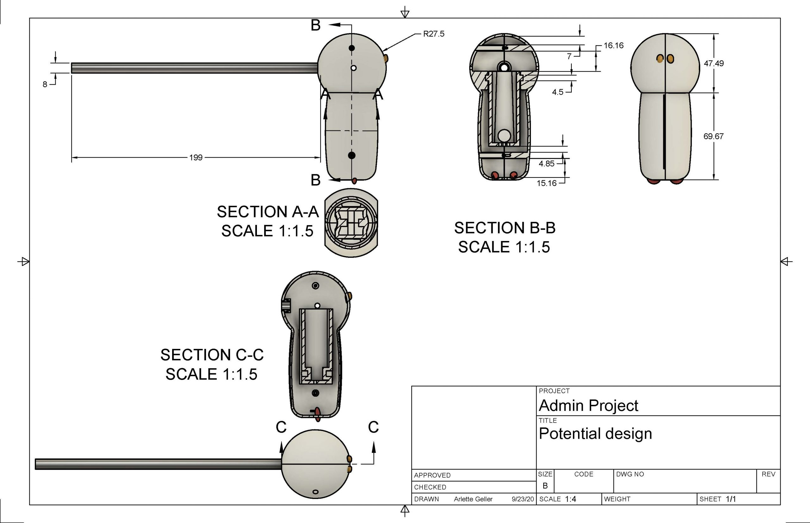
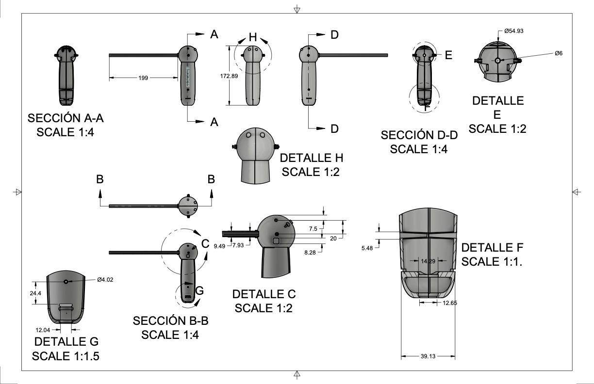
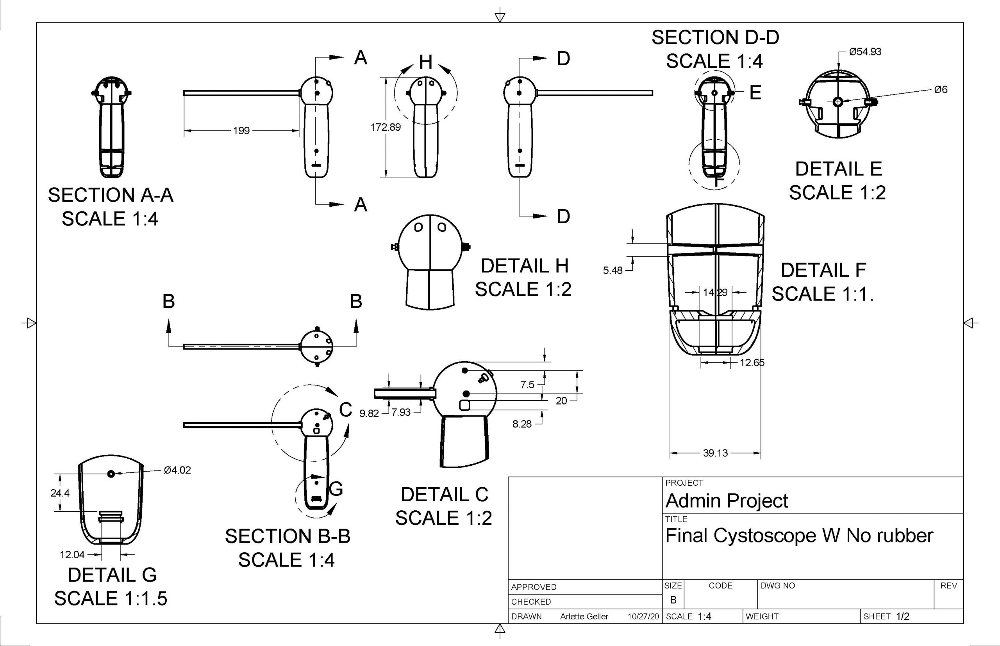
Render of Final Model:
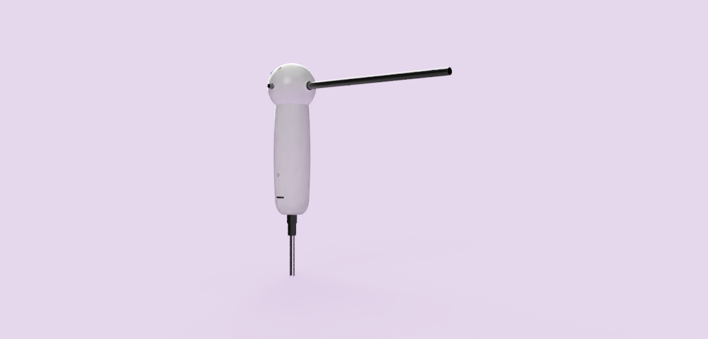
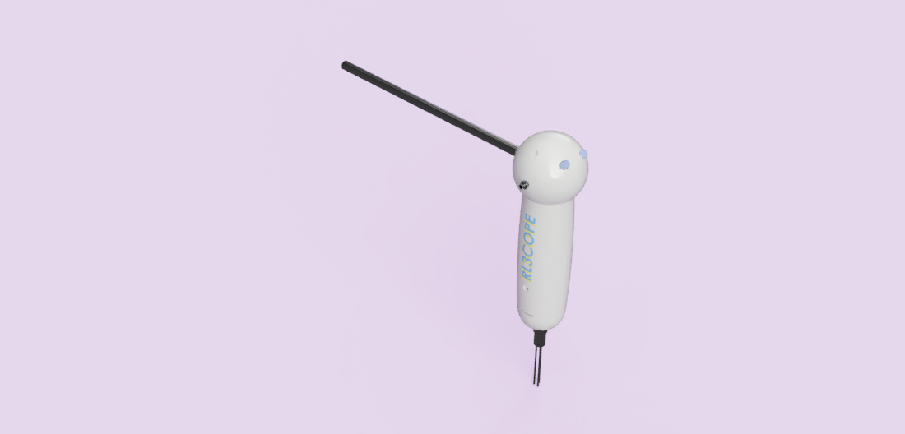
FEA Analysis:


Physical Prototype:
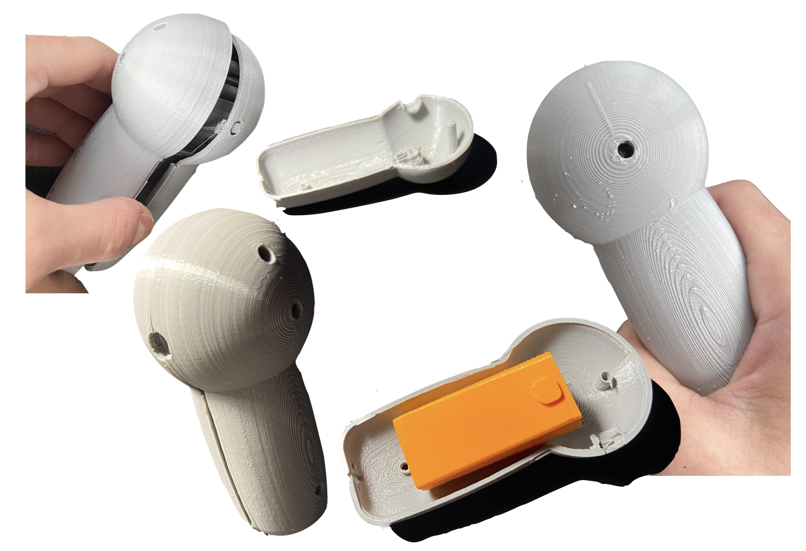
3D Printing of Prototype: